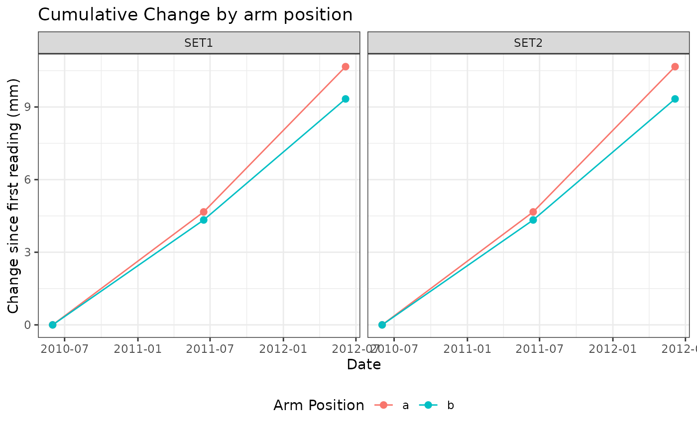
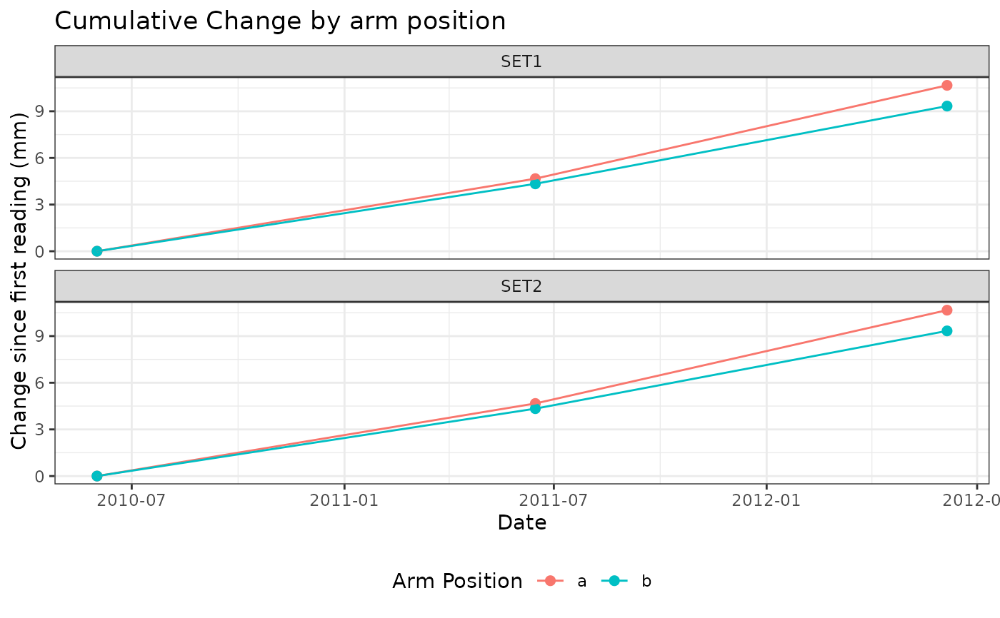

x-axis is date; y-axis is the average of the 9 pin heights' difference from baseline (first measurement) for each arm. One facet per SET id.
Usage
plot_cumu_arm(
data,
date = date,
set_id = set_id,
arm_position = arm_position,
mean_cumu = mean_cumu,
columns = 4,
pointsize = 2,
scales = "fixed"
)Arguments
- data
data frame (e.g. `$arm` piece of output from `calc_change_cumu()`) with one row per faceting variable. `mean_cumu` should be an already-calculated field of change since baseline.
- date, set_id, arm_position, mean_cumu
unquoted column names in `data`. Default to `date`, `set_id`, `arm_position`, `mean_cumu` – the names used by `calc_change_cumu()`'s output; override if your data uses different names.
- columns
number of columns you want in the faceted output
- pointsize
size of points you want (goes into the `size` argument of `ggplot2::geom_point`)
- scales
free or fixed (goes into `scales` arg of `facet_wrap`)
Examples
cumu_set <- calc_change_cumu(example_sets)
plot_cumu_arm(cumu_set$arm)

plot_cumu_arm(cumu_set$arm, columns = 1, pointsize = 2)
